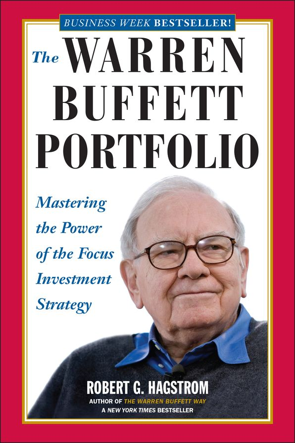

1999年，罗伯特·哈格斯特朗（Robert G. Hagstrom）在Wiley出版《The Warren Buffett Portfolio》，把自己1994年的《The Warren Buffett Way》向前推进了一步：前一本分析巴菲特如何选择企业，这一本追问选中之后该怎样配置仓位、衡量结果并承受等待。哈格斯特朗自1984年起研究巴菲特，后来在美盛等机构从事投资管理；他给书中的方法起名为"集中投资"（focus investing），定义并不是把钱押在一只热门股上，而是从能力圈内选出少数经济特征可理解、管理层可信、价格合理的优秀企业，把主要资本放进去，并把持有期拉长。这里的"少数"建立在深入研究和概率判断之上，不能与缺少分析的集中下注混为一谈。
全书九章先把这套方法放到现代投资组合理论的对面：哈里·马科维茨以方差和协方差组织分散化，巴菲特则把风险理解为永久损失与判断错误。随后作者考察约翰·梅纳德·凯恩斯、巴菲特合伙公司、查理·芒格、红杉基金的比尔·鲁安和GEICO的卢·辛普森。凯恩斯1927年至1945年管理剑桥大学国王学院Chest Fund，年均回报13.2%，同期英国市场为-0.5%；代价是29.2%的年度波动率，1938年单年下跌40.1%。书中另用随机组合做实验：每组生成3000个组合，分别持有15、50、100和250只股票；十年期内跑赢市场的数量依次为808、549、337和63。结果说明集中会扩大结果分布、提高超额收益出现的概率，却不保证任何单个投资者成功。
后半部把持仓纪律拆成可检查的环节。业绩不只看季度股价，还看企业"透视盈余"、税后复利和交易成本；特伦斯·奥登对1987—1993年一万份折扣券商账户的97483笔交易研究显示，平均年换手率达78%，卖出的股票此后表现反而好于买入的股票。仓位部分引入凯利模型：优势越大，下注可以越大，但哈格斯特朗明确写明没有证据证明巴菲特实际使用凯利公式，并提醒避免杠杆、误判胜率和过度下注；半凯利把下注额减半，理论增长率只减少四分之一。心理学一章讨论"市场先生"和损失厌恶，复杂适应性系统一章借圣塔菲研究所的研究说明，市场参与者会相互学习，稳定公式可能因被广泛采用而失效。
查理·芒格在1999年伯克希尔股东大会上说，他读完整书后"was flabbergasted"，并给出一句准确的评价："It doesn't pick any stocks for you, but it does illuminate how the investment process really works, if you think about it rationally."——它不会替读者挑股票，却会照亮理性思考时投资过程如何运作。机械工业出版社先后出版过中译本，2021年杨天南译本沿用正式书名《巴菲特的投资组合》。这本书最适合用来校正两个常见误读：持股多不自动等于风险低，持股少也不自动等于巴菲特式投资。真正困难的是在少数企业上建立足够扎实、能够反复证伪的判断，同时接受数年落后于指数的可能；书中凯恩斯、芒格和鲁安的记录都表明，集中投资者必须先有承受这种路径的资本结构与心理条件。